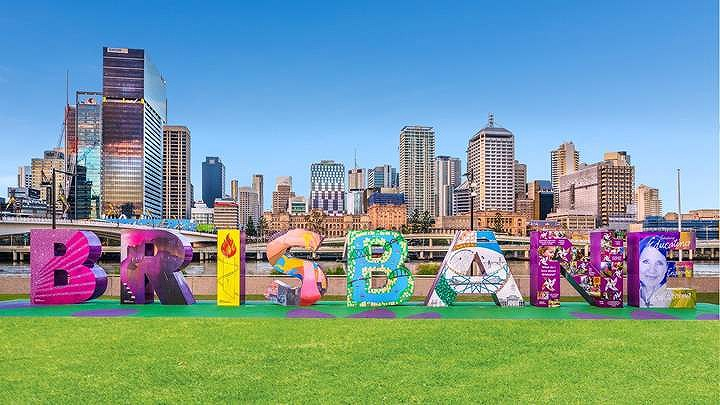
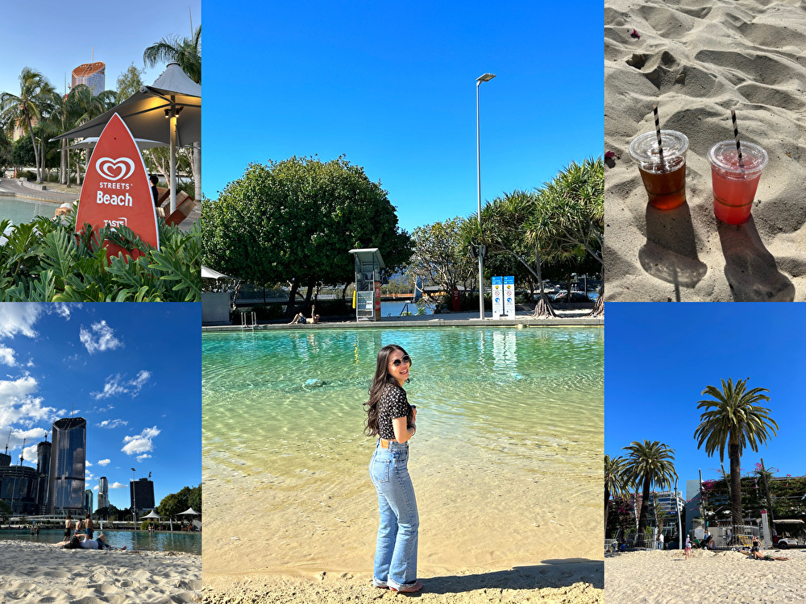
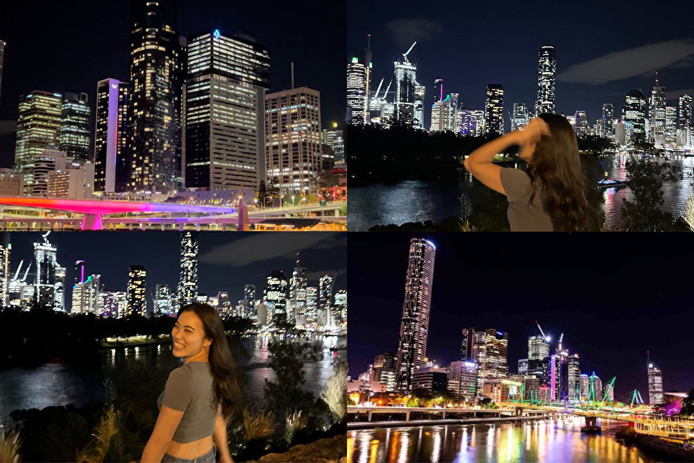
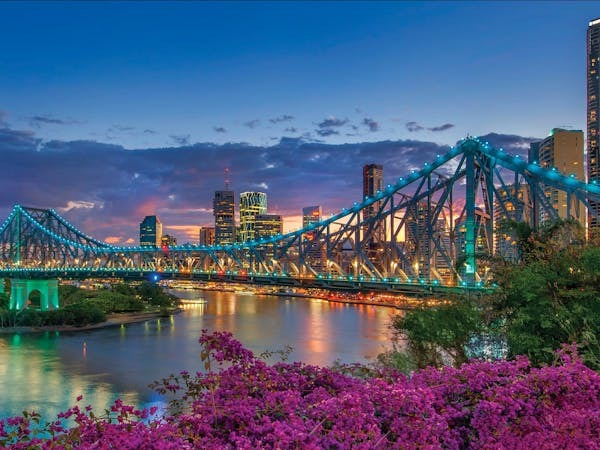

ブリスベンってどんなまち？
オーストラリア第３の都市で、クイーンズランド州にある『ブリスベン』
1日あれば、徒歩で市内すべてを観光できるほど小さな町であり、電車やバス、フェリーなどの公共交通機関も充実している。
ビーチが有名なゴールドコーストへも電車で二時間ほどでいけるため、立地が良い。
2032年にはブリスベンで夏季オリンピックが予定されているため、市内中心部では都市開発が進められている。
Queens Street Mall

『セントラルステーション』を降りてすぐに見えるのが市内の中心に位置するQueens Street Mall。
スーパー、銀行、飲食店、雑貨屋、お土産店、ブランド店など生活に必要なものがすべて揃っている。
全てのお店がコンパクトに集まっているのでたくさん歩く必要がなく便利。
SOUTHBANK
|  |
|  |
Queens Street Mallから徒歩10分ほどに位置するSOUTHBANK。
休日にはたくさんの人が集まり、教育機関や飲食店、有名な人口ビーチがある。
サウスバンクからフェリーに乗ると綺麗な夜景を見ることができる。
STORY BRIDGE

市内から徒歩20分程度のリバーサイドに位置するSTORY BRIDGE。
たくさんの飲食店やバーが並んでおり、夜景を見ながら食事をするのがおすすめ。